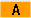

Mit dem Eingabeeditor IME (Input Method Editor) können Sie auf klassischen Panels (ohne Touch-Bedienung) koreanische Schriftzeichen in Eingabefelder einfügen.
|
Hinweis
|
|
Zur Eingabe von koreanischen Schriftzeichen benötigen Sie eine spezielle Tastatur. Wenn diese nicht zur Verfügung steht, können Sie die Zeichen mithilfe einer Matrix eingeben.
|
Koreanische Tastatur
Zur Eingabe von koreanischen Schriftzeichen benötigen Sie eine Tastatur mit der unten dargestellten Tastaturbelegung. Diese Tastatur entspricht bezüglich der Tastenbelegung einer englischen QWERTY- Tastatur, wobei die erhaltenen Events in Silben zusammengefasst werden müssen.

Aufbau des Editors

Funktionen
| | Schriftzeichen mithilfe einer Matrix editieren |
 | Schriftzeichen mit der Tastatur editieren |
| | Eingabe koreanischer Zeichen |
|  | Eingabe lateinischer Buchstaben |
Voraussetzung
Die Steuerung ist auf die koreanische Sprache umgestellt.
Vorgehen
Schriftzeichen mit der Tastatur editieren |
| +  | 1. | Öffnen Sie die Maske und positionieren Sie den Cursor auf das Eingabefeld. Drücken Sie die Tasten <Alt +S>. Der Editor wird eingeblendet. |
 | 2. | Wechseln Sie in das Auswahlfeld "Tastatur - Matrix". |
 | 3. | Wählen Sie die Tastatur aus. |
| | 4. | Wechseln Sie in das Funktionsauswahlfeld. |
| | 5. | Wählen Sie die Eingabe von koreanischen Zeichen aus. |
| | 6. | Geben Sie die gewünschten Zeichen ein. |
 | 7. | Drücken Sie die Taste <Input>, um die Schriftzeichen in das Eingabefeld einzufügen. |
Schriftzeichen mithilfe einer Matrix editieren |
| + | 1. | Öffnen Sie die Maske und positionieren Sie den Cursor auf das Eingabefeld. Drücken Sie die Tasten <Alt +S>. Der Editor wird eingeblendet. |
| | 2. | Wechseln Sie in das Auswahlfeld "Tastatur - Matrix". |
| | 3. | Wählen Sie die "Matrix" aus. |
| | 4. | Wechseln Sie in das Funktionsauswahlfeld. |
| | 5. | Wählen Sie die Eingabe von koreanischen Zeichen aus. |
| | 6. | Geben Sie die Nummer der Zeile ein, in der sich das gewünschte Zeichen befindet. Die Zeile wird farblich hervorgehoben. |
| | 7. | Geben Sie die Nummer der Spalte ein, in der sich das gewünschte Zeichen befindet. Die Zeichen wird kurzzeitig farblich hervorgehoben und in das Feld Schriftzeichen übernommen. |
| | | Drücken Sie die Taste <BACKSPACE>, um eingegebene Laute zu löschen. |
| | 8. | Drücken Sie die Taste <Input>, um das Schriftzeichen in das Eingabefeld einzufügen. |